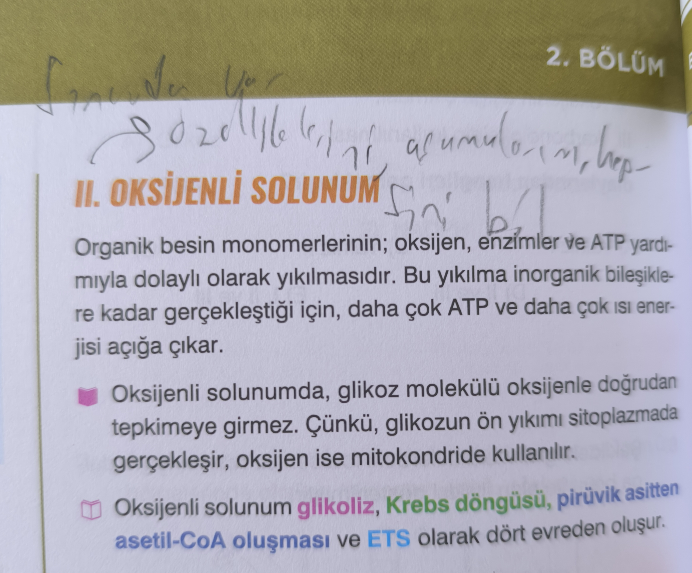
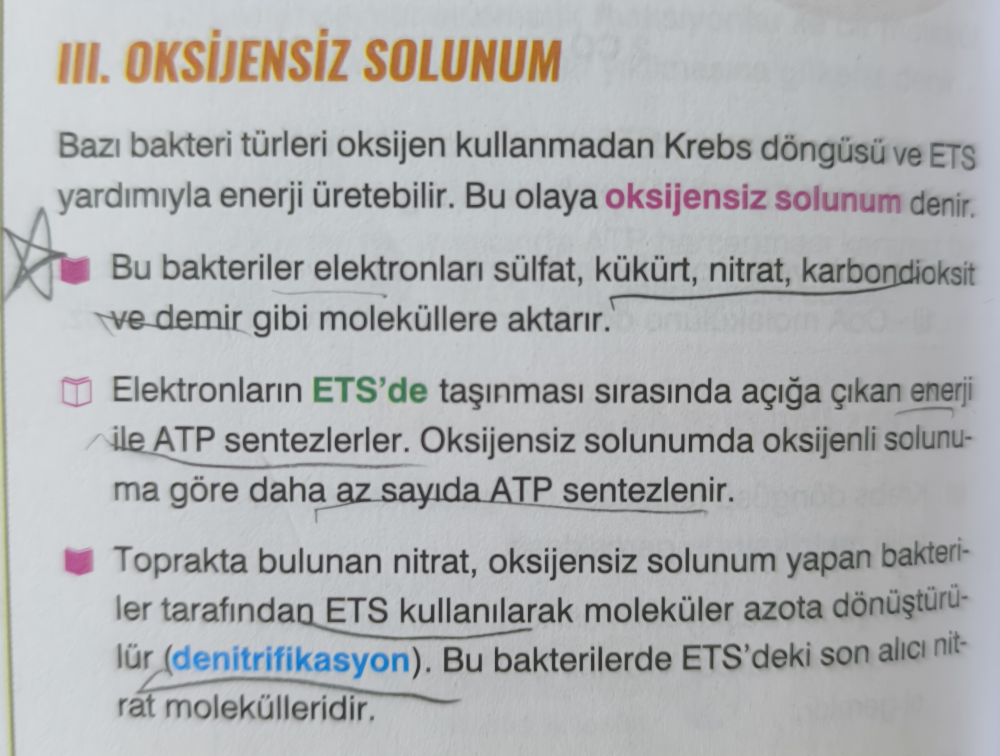
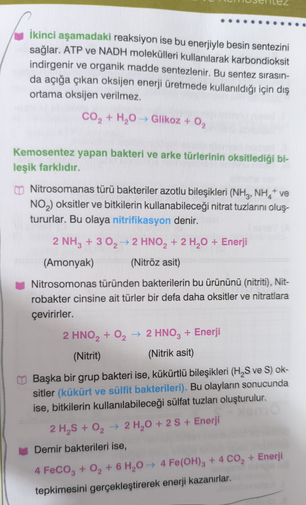
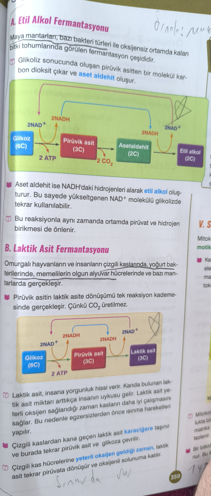
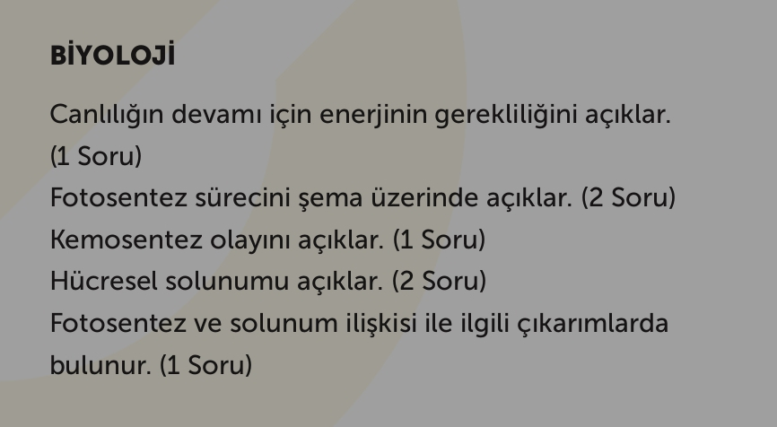

Canlılığın devamı için enerji
Canlılığın devamı için enerjinin gerekliliği açıklanır.
Eksiksiz dijital çalışma sayfası
Gönderdiğin görsellerdeki tüm biyoloji notları burada düzenli, okunabilir, karanlık tema destekli ve mobil/masaüstü uyumlu bir PWA olarak toplandı.
Yazılı Odak Özeti
Sınav kapsamı
Canlılığın devamı için enerjinin gerekliliği açıklanır.
Fotosentez süreci şema üzerinde açıklanır.
Kemosentez olayı açıklanır.
Hücresel solunumun temel mekanizması açıklanır.
Fotosentez ve solunum ilişkisi ile ilgili çıkarımlarda bulunulur.
Hızlı tekrar
Canlılık faaliyetlerinin devamı, madde dönüşümleri, sentez-yıkım olayları ve ATP üretimi için enerji zorunludur.
Fotosentez organik madde ve oksijen üretirken, solunum bu organik maddeleri parçalayarak ATP üretir. Biri diğerinin hammaddesini oluşturur.
Elektron alıcısının oksijen olup olmaması, ATP verimini ve son ürünleri doğrudan etkiler.
Bazı bakteri ve arkeler inorganik maddeleri oksitleyerek enerji elde eder, sonra bu enerjiyi organik madde sentezinde kullanır.
Detaylı çalışma notları
Organik besin monomerlerinin; oksijen, enzimler ve ATP yardımıyla dolaylı olarak yıkılmasıdır. Bu yıkılma inorganik bileşiklere kadar gerçekleştiği için, daha çok ATP ve daha çok ısı enerjisi açığa çıkar.
Oksijenli solunum = Daha fazla ATP + Son aşamada oksijen kullanımı

Bazı bakteri türleri oksijen kullanmadan Krebs döngüsü ve ETS yardımıyla enerji üretebilir. Bu olaya oksijensiz solunum denir.

İkinci aşamadaki reaksiyon, elde edilen enerjiyle besin sentezini sağlar. ATP ve NADH kullanılarak karbondioksit indirgenir ve organik madde sentezlenir. Sentez sırasında açığa çıkan oksijen enerji üretiminde kullanıldığı için dış ortama oksijen verilmez.
CO₂ + H₂O → Glikoz + O₂
2 NH₃ + 3 O₂ → 2 HNO₂ + 2 H₂O + Enerji
(Amonyak) → (Nitröz asit)2 HNO₂ + O₂ → 2 HNO₃ + Enerji
(Nitrit) → (Nitrik asit)2 H₂S + O₂ → 2 H₂O + 2 S + Enerji
Kükürt ve sülfit bakterileri4 FeCO₃ + O₂ + 6 H₂O → 4 Fe(OH)₃ + 4 CO₂ + Enerji
Demir bakterileri
Glikoz (6C) → Pirüvik asit (3C) → Asetaldehit (2C) → Etil alkol (2C)
Glikoz (6C) → Pirüvik asit (3C) → Laktik asit (3C)

Orijinal görseller

Kendini dene
Yazılı öncesi son tur